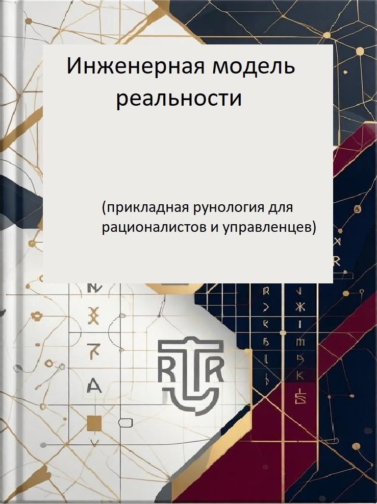

Инженерная модель реальности
📖 Год: 2025
📚 Серия: Руны как этапы процесса — книга 1
О книге
Вы держите в руках не «книгу тайн» и не сборник магических рецептов. Это инженерная модель реальности. Руны — это не только магия, но и язык, на котором описан любой процесс.
Автор — инженер-программист по образованию, всю жизнь проработавший в продажах и управлении, а ныне практикующий рунолог — предлагает посмотреть на руны иначе: не как на «символы богатства, защиты или любви», а как на универсальный язык описания этапов любого процесса.
Руна Феху — это не «деньги». Это «начало».
Руна Хагалаз — это не «разрушение». Это «жизнь с результатом».
Руны не делают за вас. Они показывают — на каком этапе процесса вы находитесь и что делать дальше.
Для кого эта книга
- Для тех, кто устал от хаоса
- Для тех, кто верит в наблюдение, а не в заклинания
- Для тех, кто готов признать: причина неудач — не «злые силы», а неверно пройденный этап
- Для управленцев, продажников, предпринимателей
- Для всех, кто хочет понимать структуру процессов
Что вы узнаете
- Что такое «три времени»: То, что есть → То, что происходит → То, что должно быть
- Почему руны расположены именно в таком порядке (Футарк)
- Значение всех 24 рун как этапов процесса
- Как распознавать этапы в быту, бизнесе и отношениях
- Почему руны «не работают» и что с этим делать
Содержание
- Часть 1. Теоретическая основа: Время и процесс
- Часть 2. Структура и порядок (Рунический строй)
- Часть 3. Символизм рун — 24 руны: от Феху до Дагаз
- Часть 4. Вопросы этики и практики
- Приложение. Библиография и источники
«Эта книга — первая из серии. Её задача — дать систему. Без ритуалов. Без „тайных знаний“. Только структура, логика, примеры из быта, бизнеса, продаж и отношений. Руны — это не только магия, но и инструмент анализа.»